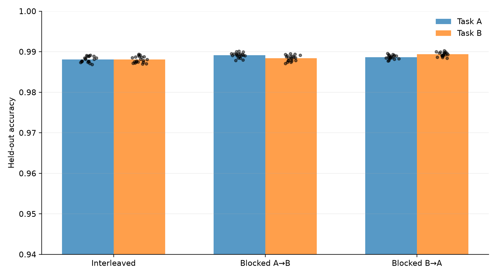
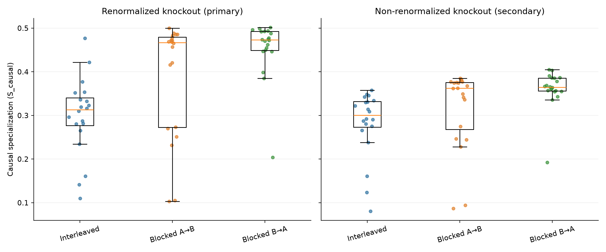
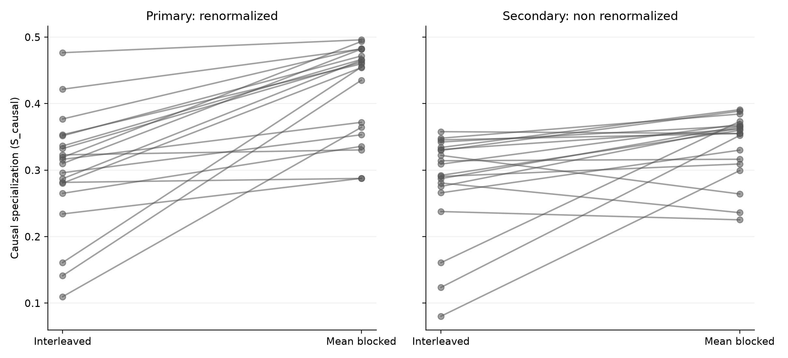
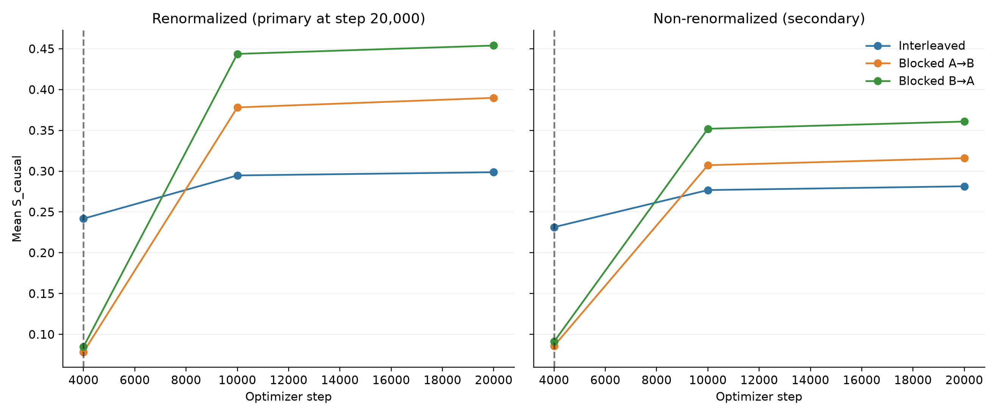
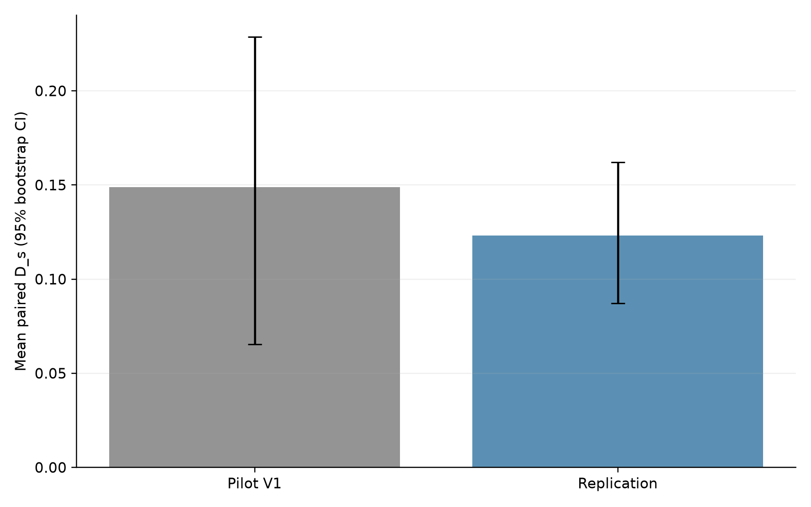

# Exact Independent Replication Report ## Technical summary **Classification: REPLICATED IN THIS CONFIGURATION.** The preregistered primary endpoint used the final step-20,000 renormalized knockout across 20 paired initialization seeds. Mean `D_s` was 0.12315 (median 0.11324, SD 0.08741), with a 95% paired bootstrap CI [0.08718, 0.16215]. The paired t-test gave p=4.77386e-06, Wilcoxon p=1.90735e-06, and Cohen's dz=1.409. Positive/negative/zero seeds: 20/0/0. This result is evidence only for this frozen tiny-MoE configuration. It does not prove the general Developmental Computational Individuality Hypothesis. ## Behavioral equivalence The preregistered behavioral criterion passed. Mean blocked-minus-interleaved differences were +0.00079 for Task A and +0.00083 for Task B; the frozen tolerance was ±0.02, with every condition required to average at least 0.95 on both tasks. | Condition | Acc A | Acc B | Balanced | S_route | S_causal renorm | S_causal non-renorm | Collapse | |---|---:|---:|---:|---:|---:|---:|---:| | Interleaved | 0.9881 | 0.9881 | 0.9881 | 0.5653 | 0.2987 | 0.2814 | 0/20 | | Blocked A→B | 0.9891 | 0.9884 | 0.9888 | 0.6416 | 0.3898 | 0.3159 | 0/20 | | Blocked B→A | 0.9887 | 0.9894 | 0.9890 | 0.7470 | 0.4539 | 0.3608 | 0/20 |
## Primary renormalized knockout result For knockout of expert e, its contribution is removed and the surviving expert receives weight 1. `Delta_e,T = Accuracy_T(normal) - Accuracy_T(-e)` and `S_causal = 0.5 * sum_e |Delta_e,A - Delta_e,B|`. The paired endpoint is the mean of the two blocked conditions minus Interleaved within each initialization seed.

| Seed | Interleaved | Mean blocked | D_s | D_s non-renorm | |---|---:|---:|---:|---:| | 100 | 0.31625 | 0.37193 | +0.05568 | +0.00227 | | 101 | 0.14126 | 0.43520 | +0.29394 | +0.22840 | | 102 | 0.10976 | 0.36434 | +0.25458 | +0.21897 | | 103 | 0.42172 | 0.48216 | +0.06045 | +0.03050 | | 104 | 0.32304 | 0.33045 | +0.00741 | -0.05801 | | 105 | 0.33638 | 0.46642 | +0.13004 | +0.05684 | | 106 | 0.37698 | 0.48282 | +0.10584 | -0.00279 | | 107 | 0.35330 | 0.45974 | +0.10645 | +0.03637 | | 108 | 0.33246 | 0.46241 | +0.12995 | +0.05905 | | 109 | 0.23415 | 0.28771 | +0.05356 | -0.01245 | | 110 | 0.26514 | 0.33583 | +0.07069 | +0.06418 | | 111 | 0.47665 | 0.49596 | +0.01931 | +0.00950 | | 112 | 0.31926 | 0.49351 | +0.17425 | +0.06766 | | 113 | 0.28161 | 0.28757 | +0.00596 | -0.04462 | | 114 | 0.28715 | 0.46522 | +0.17807 | +0.07865 | | 115 | 0.35167 | 0.47170 | +0.12003 | +0.02415 | | 116 | 0.28046 | 0.45423 | +0.17377 | +0.08836 | | 117 | 0.29612 | 0.35322 | +0.05710 | +0.01880 | | 118 | 0.30989 | 0.48200 | +0.17211 | +0.05989 | | 119 | 0.16109 | 0.45489 | +0.29380 | +0.21239 | ## Secondary non-renormalized knockout The secondary intervention zeroes the removed expert while retaining the survivor's original routing probability. Its independent paired result was mean `D_s=0.05691`, 95% bootstrap CI [0.02511, 0.09356], t-test p=0.00501234, Wilcoxon p=0.00198555, and dz=0.709. It does not replace the preregistered primary metric. ## Causal dynamics Steps 4,000 and 10,000 are preregistered secondary dynamics analyses in the replication; only the renormalized step-20,000 value is the primary endpoint.
## Pilot V1 versus replication
Pilot V1 was analyzed from its immutable frozen results. Its 4,000/10,000 checkpoint causal analyses are labeled **POST-HOC EXPLORATORY ANALYSIS** and are not part of Pilot V1's original confirmatory test. ## Reproducibility and diagnostics All integrity checks passed. Each run records the resolved device, Python, PyTorch, OS, Git commit, config hash, source hash, deterministic-algorithm setting, true mean per-example router entropy, and formal prolonged-collapse outcome. Unsupported nondeterministic backend operations recorded: []. ## Interpretation boundary The architecture, tasks, optimizer, schedule, curriculum, loss coefficient, duration, data-generating process, primary metric, and decision rule were frozen in Git before replication. No DL-MoE, multimodal, hemispheric, bottleneck, or architecture experiment was performed.